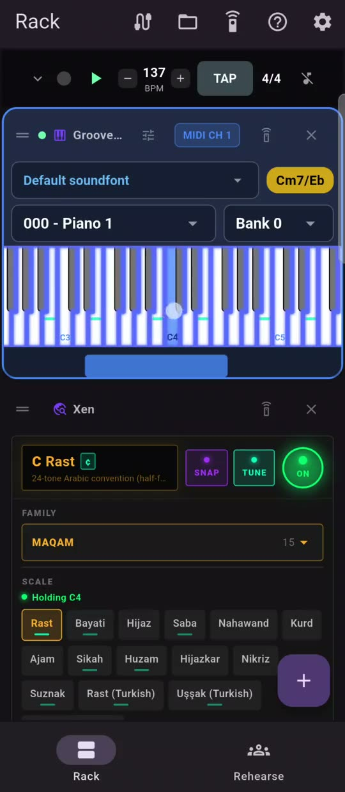
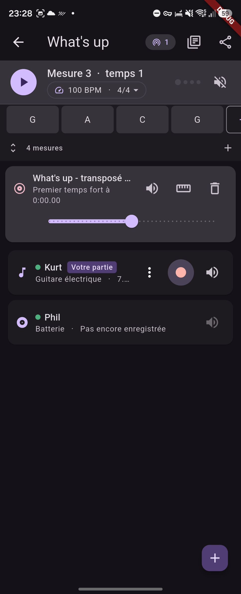

GrooveForge est une app de musique gratuite. Vous montez un rack de modules (claviers, guitare, effets,
batteur, loopers) et vous les reliez par des câbles, comme du vrai matériel. Jouez sur l’écran, ou
branchez un clavier MIDI.
En répétition, chacun enregistre sa partie du morceau sur son propre téléphone, et les téléphones
s’échangent le morceau par le Wi-Fi. Pas de compte, pas besoin d’internet.
Chaque module a des prises à l’arrière. Touchez l’icône de câble en haut de l’écran
(Vue de câblage), puis appuyez longuement sur une prise et glissez jusqu’à une autre.
Les câbles jaunes transportent les notes, les rouges et les blancs transportent le son. Dans la vidéo
(l’app y est en anglais), un câble jaune relie le clavier à Riff, une guitare qui n’a pas de touches : le clavier joue maintenant la guitare.
Un instrument sort dans les haut-parleurs sans aucun câble. On ne le branche que pour envoyer ses notes
ou son son vers un autre module.
Chacun enregistre sa partie sur un clic commun. GrooveForge mesure le retard de votre téléphone, à la
lecture comme à l’enregistrement, une fois pour le haut-parleur et une fois par casque, puis recale
votre prise sur le temps. Importez un enregistrement pour jouer dessus, ralentissez-le jusqu’à la moitié
de sa vitesse sans changer la hauteur, notez les accords et ajoutez les partitions.
Dans Xen, tenez une touche et choisissez une gamme : la touche tenue devient la tonique, et tout ce que
vous jouez tombe dans la gamme. Il y en a 92, du blues aux maqamat, aux ragas et au gamelan. Celles qui
ont des notes entre les touches du piano réaccordent ces touches. Vous pouvez aussi créer les vôtres ou
importer des fichiers Scala (.scl).
Le Mode Jam garde un clavier dans la gamme d’un autre. Il lit l’accord joué par le clavier qui mène, ou
seulement sa note la plus grave pour une ligne de basse. Une note hors de la gamme glisse vers la plus
proche qui va bien.
Riff est une guitare électrique modélisée corde par corde. Le clavier à l’écran ou votre contrôleur MIDI
lui envoie les notes. Branchez-la dans l’Ampli pour un son crunch ou saturé.
Branchez Live Input (votre micro) dans l’Autotune et chantez : chaque note est ramenée sur votre tonalité
et votre gamme. Avec Retune à 0 ms, vous obtenez la voix de robot en escalier.
Une aiguille montre de combien de cents vous étiez à côté.
Le Générateur de batterie joue un groove au tempo affiché en haut, de la bossa nova au métal. Les loopers
commencent et arrêtent l’enregistrement sur une barre de mesure : votre boucle
reste en place avec la batterie.
Installer GrooveForge
GrooveForge est gratuit et open source (licence MIT). Sur Android, installez-le depuis
Google Play ou
F-Droid. Pour Windows, macOS et Linux
(paquets .deb, .rpm, Arch et Flatpak), téléchargez-le sur la
page des versions sur GitHub.
La démo web tourne dans le navigateur sans rien installer, mais avec moins de modules :
Riff, l’Ampli, l’Autotune, le Vocodeur, le Looper Audio, Live Input et les effets audio demandent l’app.
La démo oublie aussi votre session quand vous la fermez : utilisez Enregistrer sous…
pour garder votre projet.
Les plugins VST3 ne se chargent que dans les apps Windows, macOS et Linux.

Le rack d’un nouveau projet : un clavier et un module Xen, avec le tempo et la lecture en haut.

Un morceau dans l’onglet Répéter : les accords, l’enregistrement importé et une piste par musicien.
Des recettes courtes, chacune avec sa vidéo : brancher des modules, ajouter un effet, enregistrer une boucle, sauvegarder un projet, rejoindre une répétition.